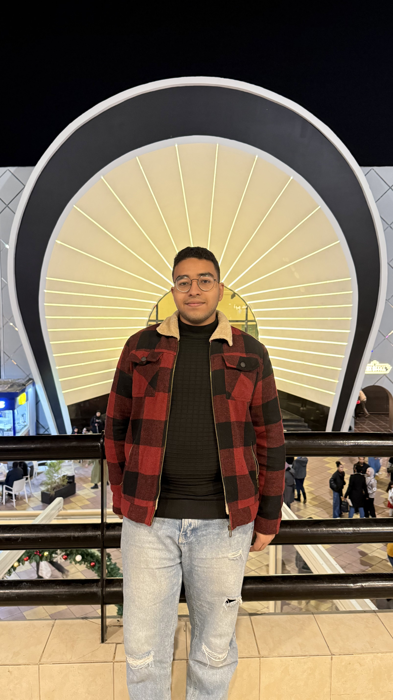

I help fast-growing organizations safeguard critical assets, build resilient data architectures, and ensure uninterrupted business continuity through proactive threat hunting and scalable data pipelines.
Explore My Journey
Built and optimized end-to-end data pipelines, covering data extraction, cleaning, transformation (ETL), and data warehouse modeling. Applied modern data tools to ensure structured data delivery for analytics and reporting tasks.
Gained hands-on experience in enterprise-grade infrastructure by assisting with Cisco switch configuration, fiber optic links, hardware troubleshooting, and monitoring. Supported the IT team in maintaining high-availability port communications.
Explored practical applications of machine learning and data analytics to optimize port operations. Worked on data preprocessing, model evaluation, and exploring automated predictive workflows for logistics.
Mentored aspiring engineers in core information security principles, threat analysis, and secure network practices. Designed and delivered technical workshops, guiding participants through practical hands-on labs.